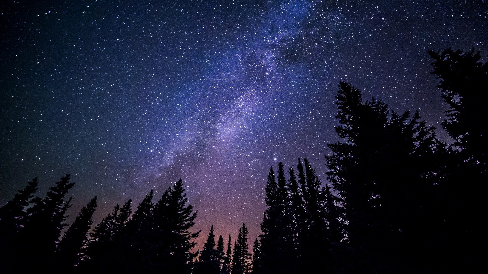

Astronomia
Para onde quer que olhemos, o universo nos convida a explorar. Das crateras da Lua às galáxias espirais a milhões de anos-luz de distância, cada ponto de luz no céu noturno conta uma história de criação, caos e beleza inimaginável. O Observatório Cósmico é o seu portal para essa jornada. Nossa missão é traduzir a complexidade do cosmos em conteúdo acessível e fascinante, seja você um astrônomo amador experiente ou alguém que apenas começou a se perguntar: "o que existe lá fora?". Junte-se a nós enquanto desvendamos os segredos do céu.

Os Pilares da Criação: Berçários de Estrelas em Órion
A cerca de 7.000 anos-luz da Terra, na Nebulosa da Águia, colunas gigantes de gás e poeira interestelar se erguem contra o brilho de estrelas jovens e quentes. Conhecidos como "Os Pilares da Criação", esses verdadeiros berçários estelares são regiões onde a gravidade comprime a matéria até que novas estrelas nasçam em seu interior. Imagens capturadas por telescópios como o Hubble e o James Webb nos revelam um balé cósmico de formação e destruição, onde a luz de estrelas recém-nascidas esculpe e ilumina as nuvens que lhes deram origem.
Júpiter, o Gigante Guardião: Uma Viagem ao Nosso Sistema Solar
Dominando o nosso quintal cósmico, Júpiter é mais do que apenas o maior planeta do Sistema Solar; ele é um verdadeiro guardião. Com sua imensa força gravitacional, ele atua como um escudo, desviando cometas e asteroides que poderiam, de outra forma, ameaçar a Terra. Suas faixas de nuvens coloridas, a Grande Mancha Vermelha — uma tempestade maior que nosso planeta — e suas dezenas de luas, como a gelada Europa, que pode abrigar um oceano subterrâneo, fazem de Júpiter um mundo de extremos e um laboratório natural para entendermos a formação de planetas.

Guia do Astrônomo Amador: O Que Ver no Céu de Outubro
O céu noturno é um espetáculo em constante mudança. Neste mês, os observadores do hemisfério sul terão uma visão privilegiada do centro da Via Láctea logo após o anoitecer. Procure pela constelação de Sagitário para encontrar essa região densa em estrelas e nebulosas. Além disso, Saturno, o senhor dos anéis, estará visível a olho nu como um ponto de luz amarelado e constante durante a maior parte da noite. Com um pequeno telescópio, seus anéis majestosos se tornam um dos shows mais inesquecíveis que o céu pode oferecer.
A Próxima Fronteira: A Busca por Vida em Exoplanetas
Estamos sozinhos no universo? Essa é talvez a pergunta mais antiga da humanidade. Hoje, graças a telescópios espaciais como o Kepler e o TESS, já descobrimos milhares de planetas orbitando outras estrelas — os chamados exoplanetas. A próxima grande missão da astronomia é analisar a atmosfera desses mundos distantes em busca de "bioassinaturas", gases como oxigênio e metano, que podem indicar a presença de vida. A cada novo mundo rochoso encontrado na "zona habitável" de sua estrela, ficamos um passo mais perto de uma resposta.